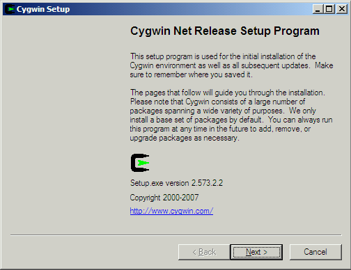
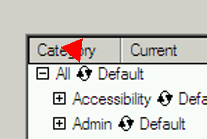

Windows support
Instructions for compiling and installing libvirt on Windows.
Binaries
Binaries will be available from the download area (but we don't have binaries at the moment).
Compiling from source
These are the steps to compile libvirt and the other tools from source on Windows.
You will need:
- MS Windows. Microsoft makes free (as beer) versions of some of its operating systems available to MSDN subscribers. We used Windows 2008 Server for testing, virtualized under Linux using KVM-53 (earlier versions of KVM and QEMU won't run recent versions of Windows because of lack of full ACPI support, so make sure you have the latest KVM).
- Cygwin's setup.exe.
- A large amount of free disk space to install Cygwin. Make sure you have 10 GB free to install most Cygwin packages, although if you pare down the list of dependencies you may get away with much less.
- A network connection for Windows, since Cygwin downloads packages from the net as it installs.
- Libvirt latest version from CVS
- The latest source patch from the download area.
- A version of Cygwin sunrpc, patched to support building
librpc.dll. A patch and a binary package are available from the download area.
These are the steps to take to compile libvirt from source on Windows:
-
Run Cygwin setup.exe. When it starts up it will show a dialog like this:
 -
Step through the setup program accepting defaults or making choices as appropriate, until you get to the screen for selecting packages:

The user interface here is very confusing. You have to click the "recycling icon" as shown by the arrow:
which takes the package (and all packages in the subtree) through several states such as "Install", "Reinstall", "Keep", "Skip", "Uninstall", etc.
-
You can install "All" (everything) or better select just the groups and packages needed. Select the following groups and packages for installation:
Groups Archive
Base
Devel
Editors
Mingw
Perl
Python
ShellsPackages openssh
sunrpc ≥ 4.0-4 (see below) -
Once Cygwin has finished installing, start a Cygwin bash shell (either click on the desktop icon or look for Cygwin bash shell in the Start menu).
The very first time you start the Cygwin bash shell, you may find you need to run the
mkpasswdandmkgroupcommands in order to create/etc/passwdand/etc/groupfiles from Windows users. If this is needed then a message is printed in the shell. Note that you need to do this as Windows Administrator. -
Install Cygwin sunrpc ≥ 4.0-4 package, patched to include
librpc.dll. To do this, first check to see whether/usr/lib/librpc.dllexists. If it does, you're good to go and can skip to the next step.If you don't have this file, either install the binary package sunrpc-4.0-4.tar.bz2 (just unpack it, as Administrator, in the Cygwin root directory). Or you can download the source patch and apply it by hand to the Cygwin sunrpc package (eg. using cygport).
-
Check out Libvirt from CVS and apply the latest Windows patch to the source.
-
Configure libvirt by doing:
autoreconf ./configure --without-xen --without-qemu
(The autoreconf step is probably optional).
The configure step will tell you if you have all the required parts installed. If something is missing you will need to go back through Cygwin setup and install it.
-
Rebuild the XDR structures:
rm qemud/remote_protocol.[ch] qemud/remote_dispatch_*.h make -C qemud remote_protocol.c
-
Build:
make
If this step is not successful, you should post a full report including complete messages to the libvirt mailing list.
-
Test it. If you have access to a remote machine running Xen or QEMU/KVM, and the libvirt daemon (
libvirtd) then you should be able to connect to it and display domains using, eg:src/virsh.exe -c qemu://remote/system list --all
Please read more about remote support before sending bug reports, to make sure that any problems are really Windows and not just with remote configuration / security.
-
You may want to install the library and programs by doing:
make install
-
The above steps should also build and install Python modules. However for reasons which I don't fully understand, Python won't look in the non-standard
/usr/local/lib/python*/site-packages/directory by default so you may need to set the environment variable PYTHONPATH:export PYTHONPATH=/usr/local/lib/python2.5/site-packages
(Change the version number to your version of Python). You can test Python support from the command line:
python >>> import libvirt >>> conn = libvirt.open ("test:///default") >>> conn.listDomainsID () [1] >>> dom = conn.lookupByID (1) >>> dom.XMLDesc (0) "<domain type='test' id='1'> ..."The most common failure will be with
import libvirtwhich usually indicates that eitherPYTHONPATHis wrong or a DLL cannot be loaded.